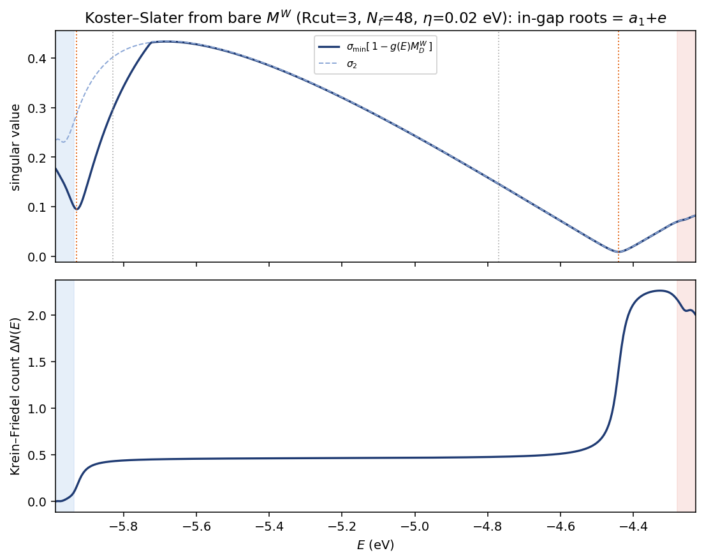

Contents
前面两条路都给出正确的 $a_1\oplus e$,但都贵:explicit 21-band(把带搬进 $P$ 显式对角化,结果页 Fig 14)要 $46$ min $+\,N_A^3$ 对角化;全阶 Feshbach(把带留 $Q$ 全阶 dress,ladder 页 §6)要 ~天。本页推导第三条、也是最省的:Koster–Slater 缺陷格林函数法(经典的 defect-GF 方法)。它不分 $P$/$Q$、不做 rest dressing,把缺陷能级直接写成一个缺陷局域小块上的久期方程 $\det[1-G_0(E)\Delta V]=0$ —— host 格林函数 $G_0$ 把能带都装在里面(所以没有过度屏蔽、也没有 ladder 的发散),而 $\Delta V$ 短程(结果页 Fig 18–20 已实测),行列式只剩几十维。
1. 从大对角化到小久期方程(Lippmann–Schwinger)
缺陷哈密顿量 $H=H_0+\Delta V$,host $H_0|n\mathbf k\rangle=\varepsilon_{n\mathbf k}|n\mathbf k\rangle$。束缚态 $H|\psi\rangle=E|\psi\rangle$ 即
对 gap 里的 $E$($E\notin\mathrm{spec}\,H_0$),$(E-H_0)$ 可逆,定义 host 推迟格林函数 $G_0(E)=(E-H_0)^{-1}$:
齐次方程有非平凡解 $\iff$
等价地,缺陷散射 $T(E)=\Delta V[1-G_0(E)\Delta V]^{-1}$、全格林函数 $G=G_0+G_0TG_0$,束缚态就是 $T$(和 $G$)的极点,即 (1) 的根。这一步精确、无近似。
2. 局域性 → 行列式只剩"缺陷块"
(1) 形式上是整个空间的行列式,但 $\Delta V$ 短程:在 Wannier 基 $|w_{\mathbf R\alpha}\rangle$ 下 $\Delta V_{\mathbf R\alpha,\mathbf R'\beta}\neq0$ 只在缺陷区 $D$($|\mathbf R|,|\mathbf R'|\le R_{\rm cut}$)内(结果页 Fig 18–20:S-vacancy 的 Koster–Slater 在 $R_{\rm cut}=4$ 已收敛)。记 $P_D$ 为 $D$ 上投影,则 $\Delta V=P_D\,\Delta V\,P_D$,秩 $\le\dim D$。$G_0\Delta V$ 的非零本征值等于 $D\times D$ 矩阵 $g(E)\Delta V_D$ 的本征值,故 (1) 收缩到
$\Delta V_D$、$g(E)$ 都是 $\dim D\sim$ 几十维,不是 $N_A=3002$。关键: $\Delta V_D$ 用裸 $M^W$(结果页 Fig 17–18 已 gauge-fix、实测短程),不是 dressed $\tilde V^W$(那个带二阶 Σ、会过度屏蔽)。
3. host 格林函数 $g(E)$:能带全在里面,而且加带便宜
$g(E)$ 在 Wannier 基里就是插值 host 哈密顿量的预解:
$H_0^W(\mathbf k)$ 是 Wannier 插值的 host(EDT 已有 $H_W(\mathbf R)$;结果页 §4)。求逆 $g(E,\mathbf k)$ 自动含 Wannier 空间的全部能带 —— 派生出 $e$ 的 conduction 带就在其中(11 条已足以 bind 出 $e$,正如 11-band 裸 $M$ 给 $e=+1.49$)。要把能级收敛得更准($\to$ explicit 的 $+1.35$ / DFT 的 $+1.19$),只需把更多 host 带(经其在缺陷轨道上的投影)纳入 $g$ —— 代价只是多算些本征值的 $k$-和,远小于 explicit 为每条带付的 $N_A$ 矩阵;$k$-和还能用很细的网格、几乎免费。
这就是它既精确又省的根源:重活(全 BZ、多带)只落在便宜的 host 本征值求和上,缺陷的强散射只在几十维的 $D$ 块里精确(全 $\det$,不展开 $\Delta V$)处理。 所以既没有二阶 dressing 的过度屏蔽,也没有 ladder 在 $\Delta V_{QQ}$ 上的发散问题 —— (2) 根本不按 $\Delta V$ 展开。gap 里 $E$ 取实、$g$ 有限;要分辨能带里的共振就用 $E+i\eta$。
4. C₃ᵥ 对称性 → 久期式分块,irrep label 严格
$D$ 的轨道(3 条 Mo 悬挂键 + 近邻)在 $C_{3v}$ 下约化含 $a_1\oplus e$。$\Delta V_D$ 与 $g(E)$ 都和点群对易,(2) 的行列式按 irrep 分块:
$a_1$ 根来自 $a_1$ 块(1 维),$e$ 根来自 $e$ 块($d_e=2$ → 自动二重简并)。这严格给出 $a_1$/$a_2$/$e$ 的 label —— 回答了之前"只靠简并度、没算特征标"那个 caveat。
5. ΔDOS:同一个行列式给(Krein–Friedel)
缺陷引起的态密度变化由久期行列式的相位给出:
gap 里相位每跳 $\pi$ 对应一条束缚态(就是 (2) 的根),能带里给共振展宽。所以结果页那张 ΔDOS(Fig 15)能从这个几十维的小行列式直接得到,不必扫整块 $T$-matrix。
6. 成本与定位
| 路线 | 缺陷能级成本 | 过度屏蔽? |
|---|---|---|
| 二阶 block dressing | $2$ h | 是(发散) |
| 全阶 Feshbach | ~$1$–$3$ 天(自洽) | 否,但贵 |
| explicit 21-band | $46$ min $+\,N_A^3$ 对角化 | 否 |
| Koster–Slater (2) | 秒级($\dim D^3$ det $+$ host $k$-和) | 否 |
每个 $E$:host $k$-和 $\mathcal O(N_k\,n_{\rm band}\,\dim D^2)$ $+$ 行列式 $\mathcal O(\dim D^3)$,扫几十个 $E$ 或 root-find,总计秒到分钟,还能用更细的 $k$ 网格收敛。它绕开了 $P$/$Q$ 划分与 rest dressing(不展开 $\Delta V_{QQ}$,无 ladder 发散),又比 explicit 省掉整块 $M$ 与 $N_A^3$ 对角化。地基已就位:Wannier $M^W$ 的 gauge fix(Fig 17–18)、短程性 / $R_{\rm cut}=4$ 收敛(Fig 18–20)都在结果页验过。这是求 S-vacancy $a_1$+$e$ 最省又精确的路线;实现与实测结果见 §7。
7. 实现与结果:裸 $M^W$ 复刻出 $a_1+e$
按 (2) 落地,全复用现成件:$\Delta V_D=$ 裸 $M^W$(vtilde_block.dat 第 1 条记录,用 $U(\mathbf k)$ 旋到 Wannier、FT 到 $\mathbf R$、截到 $R_{\rm cut}=3$ 的缺陷块,dim $=539$);$g(E)=$ mos2_hr.dat 插值的 host $H_W(\mathbf k)$ 在 $N_f=48$ 细网格上求逆得到。扫 $E$ 过 gap,$[\,1-g(E)\Delta V_D\,]$ 的最小奇异值在能级处 dip,同时塌的奇异值个数 = 简并度。

Figure. Koster–Slater 从裸 $M^W$($R_{\rm cut}=3$,$N_f=48$,$\eta=0.02$ eV)。上: $[1-g(E)\Delta V_D]$ 的最小奇异值 $\sigma_{\min}$ 扫 $E$ —— $a_1$ 在 VBM 边一个浅 dip($\sigma_2\gg\sigma_1$,非简并),$e$ 在 $-4.44$ 一个深 dip 且 $\sigma_1=\sigma_2$(二重简并)。下: Krein–Friedel 计数 $\Delta N(E)$ 的阶梯。两条 dip 的位置就是缺陷能级。
结果与 11-band explicit 本征值逐位吻合:
| Koster–Slater(裸 $M^W$) | 11-band explicit | |
|---|---|---|
| $a_1$(singlet) | $-5.929$($+0.01$);$\sigma_1{=}0.095,\ \sigma_2{=}0.29$ → 非简并 | $-5.926$($+0.01$) |
| $e$(doublet) | $-4.441$($+1.50$);$\sigma_1{=}\sigma_2{=}0.009$ → 二重简并 | $-4.441$($+1.50$) |
三点:
- $e$ 精确到位($-4.441$ 完全一致),$a_1$ 差 $3$ meV(细网格 host GF 的微调);
- singlet/doublet 直接从奇异值简并度读出($\sigma_1\!\approx\!\sigma_2\Rightarrow e$,$\sigma_2\!\gg\!\sigma_1\Rightarrow a_1$)—— 把 §4 的对称性分块落成一个可算的判据,补上之前"只靠本征值简并、没特征标"那个 caveat;
- 成本:dim-$539$ 的 SVD × ~$400$ 个 $E$ 点 ~ 分钟级,没碰 $P$/$Q$ dressing。
$e=+1.50$ 是 11-band 的值(host GF 只含 11 个 Wannier 带,与 11-band explicit 自洽);host GF 里多放些带(更大的 rewann)会把它精修到 explicit 的 $+1.35$ / DFT 的 $+1.19$ —— 代价只是多算些本征值的 $k$-和,正是 Koster–Slater 省的地方。脚本:tools/koster_slater_levels.py。